在【我的待办】中，点击要分配的客户，进入贷款审批流程页面，可查看客户的基本信息和贷款业务信息。
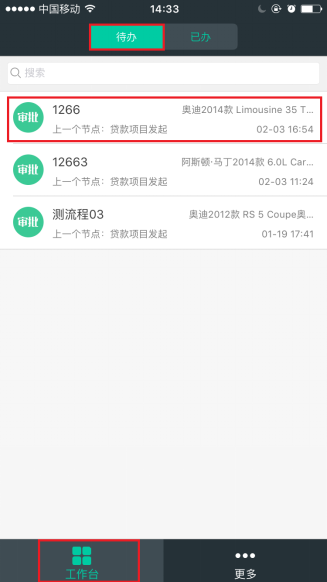
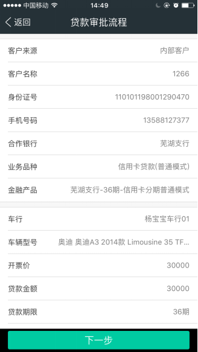
在贷款审批审批页面，我们可以查看风险经理上门家访坐标地址及客户的征信详情。
在贷款审批页面，点击【查看定位】进入地图定位页面，以百度地图的方式，清晰地在百度地图显示签单单上门签单地址具体标记。
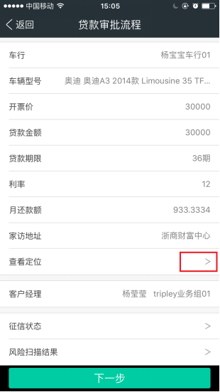
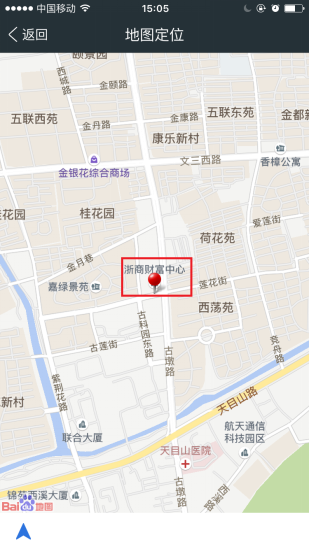
在贷款审批页面，在页面征信状态我们可以查看征信最新更新时间及征信状态，点击征信状态后的”>“进入征信状态详情页面，点击页面右上角”刷新“，可刷新征信详情页面，点击借款人征信通过”V“，可查看借款人身份证号，征信情况。
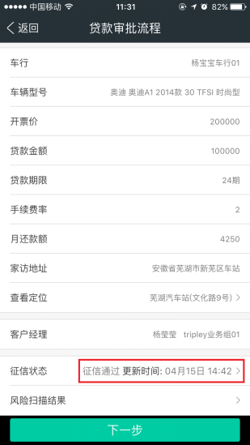
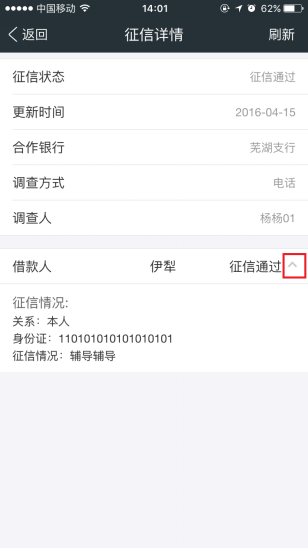
在待办详情页面点击【风险扫描结果】，可查看借款人风险状态，点击刷新可刷新风险状态。
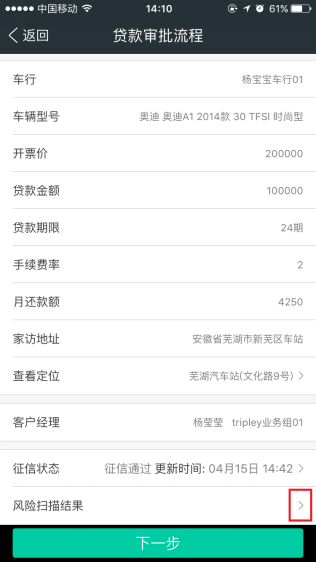
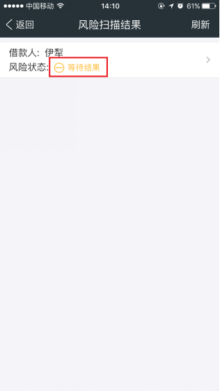
在风险扫描结果页面点击“风险状态” 后“>”按钮，进入风险详情页面，可查看客户姓名，风险状态及更新时间。点击页面右上角”刷新“可刷新风险详情。
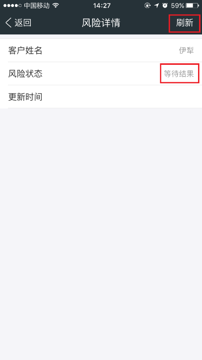
在信息确定无误之后，点击【下一步】进入风险经理分配页面。
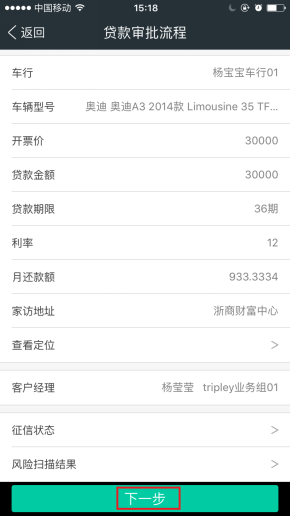
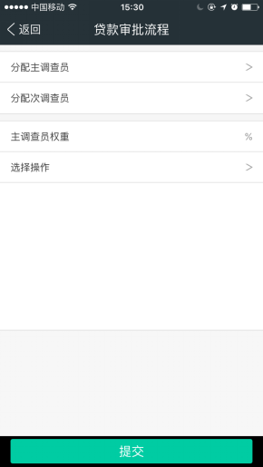
在提交页面，点击分配主调查员后“>”,进入分配主调查员分配页面，可以根据姓名部门来选择主调查员，选择的同时可参考调查员当前需处理待办数量，合理的进行分配，分配完毕之后输入主调查员权重百分比，也可搜索调查员的姓名，来快速选择调查员。
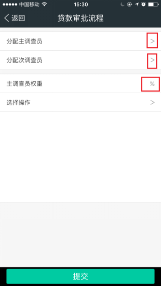
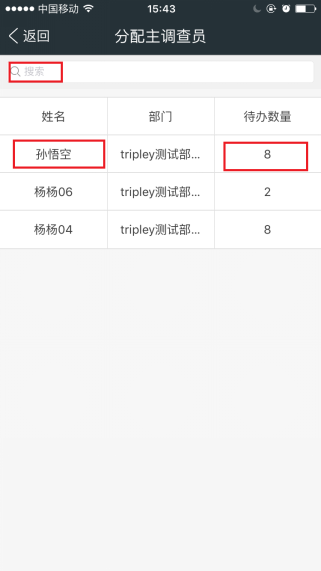
次风险经理分配如上操作一致。